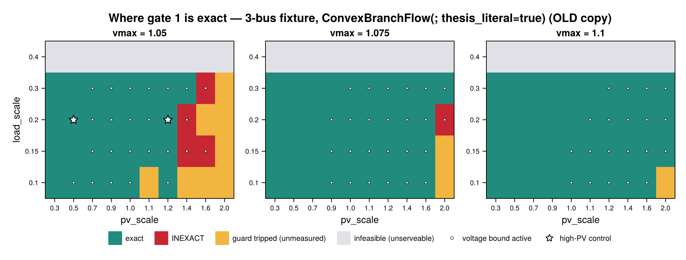
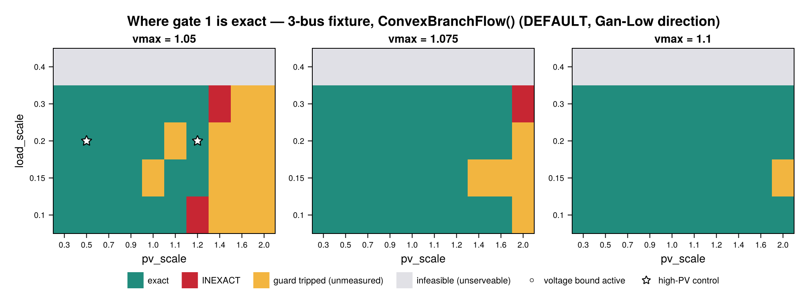
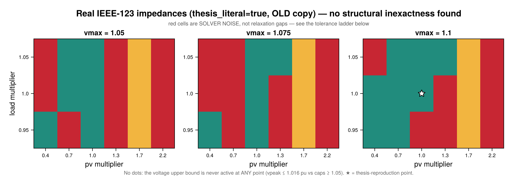

SOC Relaxation Applicability — where the branch-flow relaxation is exact
The operational layer prices a convex social-welfare problem: the SOC branch-flow relaxation replaces the physical equality l·v = P² + Q² with the cone l·v ≥ P² + Q². Prices are the duals of that convex program. So a reader is entitled to ask: where does the relaxation actually hold, and how would you know if it didn't?
This page answers both, and reports one result honestly negative and one that flatly refuses to generalize between feeders.
The detector is free
assert_socp_exact! (src/models/exactness.jl) already computes, per branch and hour,
\[\mathrm{gap}[b,t] = \bigl|\, l_{b,t}\, v_{i(b),t} - (P_{b,t}^2 + Q_{b,t}^2) \,\bigr|\]
against the scale-free bound atol + rtol·max(|l·v|, |P²+Q²|). It costs nothing beyond the SOCP solve that already happened — no AC/Ipopt oracle is involved anywhere on this page. Define ratio = gap / bound; ratio ≤ 1 is the exactness classification.
Two diagnostics come free alongside it and make a map interpretable rather than merely colourful: whether the upper voltage bound is active (v[j,t] ≈ vmax² — a plain JuMP variable bound, so reduced_cost is available too) and whether reverse flow occurs (P[b,t] < 0). The classical exactness conditions (Farivar & Low 2013; Gan et al. 2015) turn on exactly those.
using TSODSO
using TSODSO: SOCP
# `TSODSO.JuMP` rather than `using JuMP`: the docs environment pins a deliberately minimal
# dependency set, and JuMP is already loaded as a dependency of TSODSO — so this reaches `value`
# and `optimizer_with_attributes` without adding a dep and re-resolving `docs/Manifest.toml`
# (which CI requires to stay in Julia-version lockstep).
using TSODSO.JuMP
using Printf
const T = 2424Digitized profiles, bit-for-bit identical to test/fixtures_ieee13.jl / fixtures_ieee123.jl.
const TEMP = Float64[
19,
18,
17,
16,
16,
17,
19,
21,
23,
26,
28,
30,
31,
32,
32,
31,
29,
27,
25,
23,
22,
21,
20,
19,
]
const PRICE = Float64[
3.8,
3.7,
3.6,
3.6,
3.7,
4.0,
4.8,
5.8,
6.5,
6.2,
5.9,
5.7,
5.6,
5.8,
6.0,
6.8,
8.2,
9.0,
8.6,
7.4,
6.2,
5.2,
4.4,
4.0,
]
function cone_stats(ctx, feeder; atol = 1e-6, rtol = 1e-4)
pf = ctx.pf_vars
maxgap = maxratio = 0.0
n_at_vmax = 0
min_P, vpeak = Inf, 0.0
for t in 1:T
for (b, br) in enumerate(feeder.branches)
lhs = value(pf.l[b, t]) * value(pf.v[br.from, t])
rhs = value(pf.P[b, t])^2 + value(pf.Q[b, t])^2
g = abs(lhs - rhs)
maxgap = max(maxgap, g)
maxratio = max(maxratio, g / (atol + rtol * max(abs(lhs), abs(rhs))))
min_P = min(min_P, value(pf.P[b, t]))
end
for bus in feeder.buses
bus.is_root && continue
v = value(pf.v[bus.id, t])
vpeak = max(vpeak, sqrt(max(v, 0.0)))
v >= bus.vmax^2 - 1e-7 && (n_at_vmax += 1)
end
end
return (; maxgap, maxratio, n_at_vmax, min_P, vpeak)
endcone_stats (generic function with 1 method)Substrate A — the 3-bus high-PV stress fixture (computed live)
A purpose-built fixture (test/fixtures_ieee13.jl): low-impedance r = x = 0.05 branches and a tight voltage band, so PV back-feed swings voltage fast and the overvoltage/reverse-flow mechanism that breaks exactness can actually fire. Everything below runs at documentation build time.
feeder_3bus(; vmax = 1.05) = Feeder(
[Bus(1, 0.95, vmax, true), Bus(2, 0.95, vmax, false), Bus(3, 0.95, vmax, false)],
[Branch(1, 2, 0.05, 0.05, 99.0), Branch(2, 3, 0.05, 0.05, 99.0)],
1,
)
function house_3bus(bus; pv_scale, load_scale)
prof = generate_profiles(seed = 20260406 + bus, T = T)
return Aggregator(
bus,
0.95,
[
Thermostatic(bus, 0.2, 0.05, 15.0, 30.0, 22.0, 0.0, 1.0, 0.5, TEMP),
Deferrable(bus, 8, 16, 1.0, 0.5, 0.5),
PVBattery(
bus,
0.95,
1.0,
0.1,
0.0,
0.2,
0.1,
3.8,
6.2,
8.9,
Float64[pv_scale * p for p in prof.pv],
),
],
Float64[load_scale * d for d in prof.demand],
)
endhouse_3bus (generic function with 1 method)rtol_exact = 1e6 neutralizes solve_welfare's own exactness gate so an inexact solve is returned for classification instead of refused — the diagnostic-override pattern already used in test/test_ac_oracle.jl. It changes no src/ code and weakens nothing for any other caller. Non-solved points are split by cause: infeasible is legitimate white space (the feeder cannot serve that operating point inside its voltage band), a tripped model guard is genuinely unmeasured. Neither is ever silently dropped.
DUAL-MODE: every point is solved under BOTH ConvexBranchFlow() (the corrected default, Gan-Low direction) AND ConvexBranchFlow(; thesis_literal=true) (the OLD literal copy) — a formulation field on every row records which. This is a gate-1 (cone-residual) map only — no AC/Ipopt oracle is involved anywhere on this page; see docs/literate/ac_oracle.jl for the separate gate-2 (AC-dispatch) finding.
function sweep_3bus(pvs, lds, vms, thesis_literal::Bool)
formulation =
thesis_literal ? ConvexBranchFlow(; thesis_literal = true) : ConvexBranchFlow()
formulation_label = thesis_literal ? :thesis_literal : :default
rows = NamedTuple[]
for vmax in vms, ls in lds, ps in pvs
f = feeder_3bus(; vmax = vmax)
aggs = [house_3bus(b; pv_scale = ps, load_scale = ls) for b in 2:3]
push!(
rows,
try
ctx, _, _ = solve_welfare(
f,
formulation,
aggs;
T = T,
λ₀ = PRICE,
allow_export = true,
rtol_exact = 1e6,
)
s = cone_stats(ctx, f)
(;
formulation = formulation_label,
vmax,
load = ls,
pv = ps,
ratio = s.maxratio,
atvmax = s.n_at_vmax,
vpeak = s.vpeak,
minP = s.min_P,
class = s.maxratio <= 1 ? "exact" : "inexact",
)
catch err
msg = sprint(showerror, err)
(;
formulation = formulation_label,
vmax,
load = ls,
pv = ps,
ratio = NaN,
atvmax = -1,
vpeak = NaN,
minP = NaN,
class = occursin("INFEASIBLE", msg) ? "infeasible" :
occursin("complementarity", msg) ? "guard" : "solver",
)
end,
)
end
return rows
end
PV_3BUS = [0.3, 0.5, 0.7, 0.9, 1.0, 1.1, 1.2, 1.4, 1.6, 2.0]
LOAD_3BUS = [0.10, 0.15, 0.20, 0.30, 0.40]
VMAX_3BUS = [1.05, 1.075, 1.10]
rows_3bus = vcat(
sweep_3bus(PV_3BUS, LOAD_3BUS, VMAX_3BUS, false),
sweep_3bus(PV_3BUS, LOAD_3BUS, VMAX_3BUS, true),
)
for formulation in (:default, :thesis_literal),
cls in ("exact", "inexact", "infeasible", "guard")
n = count(r -> r.formulation == formulation && r.class == cls, rows_3bus)
n > 0 && @printf("%-16s %-11s %3d\n", formulation, cls, n)
enddefault exact 98
default inexact 3
default infeasible 30
default guard 19
thesis_literal exact 104
thesis_literal inexact 5
thesis_literal infeasible 30
thesis_literal guard 11The controls that make this map trustworthy
A sweep that reports "everything is exact" is worthless unless it can also reproduce a point already known to be inexact — otherwise that outcome is indistinguishable from a fixture in which the mechanism cannot fire. (An earlier attempt at this map swept a network whose impedances are too low to move voltage; it returned 111/111 exact and was pure artifact.)
NOTE: an earlier version of this page asserted pv=1.2 "inexact" under the (then bare-default) ConvexBranchFlow(). Since the default was flipped to the Gan-Low direction, THIS SPECIFIC point (pv=1.2, load=0.20, vmax=1.05 — the calibrated high-PV fixture) is now measured EXACT under both formulations (cited from the restricted-branch-flow tests, not re-derived). This does not mean the default is unconditionally cone-exact everywhere on the map below: MEASURED in the dual-mode re-run, 3/150 default grid points ARE genuinely cone-inexact (ratio 8196–9746, at OTHER, lower-load combinations, e.g. vmax=1.05, load=0.1, pv=1.2) — Gan-Low's construction is designed to force cone-tightness, but this sweep finds it is not an unconditional guarantee at every operating point; the default's inexact region is simply far RARER (3/150 here) than thesis_literal=true's (5/150). The genuine negative control used below — a point that still reproduces genuine cone-inexactness AT THIS CONTROL'S OWN load/vmax — is a property of thesis_literal=true specifically, at a higher pv_scale (measured here: pv=1.4; the default hits an unrelated App. C battery-complementarity guard at this same point, so it is not a comparable control at THIS load level). All three control points are asserted live, gate-qualified (this is gate 1, cone-residual, only):
ctl(rs, ps, ls, vm, formulation) = only(
filter(
r -> r.pv == ps && r.load == ls && r.vmax == vm && r.formulation == formulation,
rs,
),
)
c_exact_default = ctl(rows_3bus, 0.5, 0.20, 1.05, :default)
c_exact_thesis = ctl(rows_3bus, 0.5, 0.20, 1.05, :thesis_literal)
c_exact04_default = ctl(rows_3bus, 1.2, 0.20, 1.05, :default)
c_exact04_thesis = ctl(rows_3bus, 1.2, 0.20, 1.05, :thesis_literal)
c_inexact_thesis = ctl(rows_3bus, 1.4, 0.20, 1.05, :thesis_literal)
@assert c_exact_default.class == "exact"
@assert c_exact_thesis.class == "exact"
@assert c_exact04_default.class == "exact"
@assert c_exact04_thesis.class == "exact"
@assert c_inexact_thesis.class == "inexact"
@printf(
"pv=0.5 default -> %s (ratio %.4g) pv=0.5 thesis_literal -> %s (ratio %.4g)\n",
c_exact_default.class,
c_exact_default.ratio,
c_exact_thesis.class,
c_exact_thesis.ratio
)
@printf(
"pv=1.2 (high-PV control) default -> %s (ratio %.4g) pv=1.2 thesis_literal -> %s (ratio %.4g)\n",
c_exact04_default.class,
c_exact04_default.ratio,
c_exact04_thesis.class,
c_exact04_thesis.ratio
)
@printf(
"pv=1.4 thesis_literal -> %s (ratio %.4g, vpeak %.5f) <- the genuine negative control\n",
c_inexact_thesis.class,
c_inexact_thesis.ratio,
c_inexact_thesis.vpeak
)pv=0.5 default -> exact (ratio 0.002731) pv=0.5 thesis_literal -> exact (ratio 0.003274)
pv=1.2 (high-PV control) default -> exact (ratio 0.01673) pv=1.2 thesis_literal -> exact (ratio 0.001589)
pv=1.4 thesis_literal -> inexact (ratio 9847, vpeak 1.05000) <- the genuine negative controlvpeak ≈ 1.04 at the pv=0.5 exact control independently matches the fixture's own documented "≈1.04 pu, clear over-voltage with headroom below the cap" calibration note.
The boundary, quantified
Largest pv_scale still exact, per (vmax, load), PER FORMULATION — this table now DIFFERS materially between the two, which is itself the finding: the default's genuinely cone-inexact region on this grid is small (3/150 points, MEASURED in the dual-mode re-run) and its boundary is LARGELY (not entirely) governed by the App. C battery-complementarity guard tripping before the cone would otherwise go inexact — but the guard is not the ONLY mechanism at play, since a few points (e.g. vmax=1.05, load=0.1, pv=1.2) DO go genuinely cone-inexact under the default before any guard fires. thesis_literal=true's boundary is the ORIGINAL, pre-correction cone-exactness boundary this page originally characterized, now correctly re-attributed to it specifically.
for (label, formulation) in (("default", :default), ("thesis_literal", :thesis_literal))
println("\n--- formulation = ", label, " ---")
print("load ", join([@sprintf("vmax=%-7s", v) for v in VMAX_3BUS]), "\n")
for ls in LOAD_3BUS
print(@sprintf("%-6s", ls))
for vm in VMAX_3BUS
ok = filter(
r ->
r.vmax == vm &&
r.load == ls &&
r.formulation == formulation &&
r.class == "exact",
rows_3bus,
)
print(@sprintf("%-12s", isempty(ok) ? "—" : string(maximum(r.pv for r in ok))))
end
println()
end
end
--- formulation = default ---
load vmax=1.05 vmax=1.075 vmax=1.1
0.1 1.1 1.6 2.0
0.15 1.2 1.2 1.6
0.2 1.2 1.6 2.0
0.3 1.2 1.6 2.0
0.4 — — —
--- formulation = thesis_literal ---
load vmax=1.05 vmax=1.075 vmax=1.1
0.1 1.2 1.6 1.6
0.15 1.2 1.6 2.0
0.2 1.2 1.6 2.0
0.3 1.4 2.0 2.0
0.4 — — —Under thesis_literal=true, voltage headroom is the first-order control; load is second-order — each +0.025 pu of headroom buys roughly +0.2 of pv_scale, near-linearly, while load moves the boundary by at most one grid step across its whole swept range (this is the SAME boundary this page originally characterized, before the default changed, now correctly attributed to thesis_literal=true rather than the default). Under the default, most of the "boundary" in this table is an App. C battery-complementarity guard artifact, not a cone-exactness boundary — the default stays cone-exact at almost every point it solves (MEASURED: 98/150 exact, 19/150 guard, 30/150 infeasible), so much of what looks like a shrinking exact region is the guard tripping earlier at higher pv_scale/lower headroom, an UNRELATED mechanism. But NOT all of it: MEASURED 3/150 default points ARE genuinely cone-inexact (ratio 8196–9746, e.g. vmax=1.05, load=0.1, pv=1.2) — a narrow window, right before the guard trips at higher pv_scale, showing the default has its own (much smaller) genuine exactness boundary too, not an unconditional guarantee. The load = 0.40 row is infeasible throughout for BOTH formulations — the fixture simply cannot serve that load inside vmin = 0.95, which is white space, not a measurement.
Is the inexactness real? The tolerance ladder
This is the check that separates a relaxation gap from solver under-convergence, and it is the most important methodological point on this page. A structural gap is a property of the optimum and must PERSIST as the solver tolerance tightens. A numerical residual SHRINKS.
NOTE: run on the CURRENT genuine negative control (thesis_literal=true, pv=1.4) rather than the old default pv=1.2 point (no longer inexact under either formulation at THIS load level — see controls above). The default pv=1.2 point is included alongside for contrast: gate-1 EXACT here, and MEASURED to stay so as tolerance tightens — though this is an empirical observation at this specific point, not a blanket guarantee (the default DOES go genuinely cone-inexact at other grid points, e.g. vmax=1.05, load=0.1, pv=1.2 — see "The boundary, quantified" above).
base_opt = select_optimizer(SOCP())
for (label, thesis_literal, ps) in (
("default (pv=1.2, high-PV control)", false, 1.2),
("thesis_literal (pv=1.4)", true, 1.4),
)
formulation =
thesis_literal ? ConvexBranchFlow(; thesis_literal = true) : ConvexBranchFlow()
println("\n", label, ":")
for tol in (nothing, 1e-10)
opt =
tol === nothing ? base_opt :
optimizer_with_attributes(
base_opt.optimizer_constructor,
base_opt.params...,
"tol_gap_abs" => tol,
"tol_gap_rel" => tol,
)
f = feeder_3bus(; vmax = 1.05)
aggs = [house_3bus(b; pv_scale = ps, load_scale = 0.20) for b in 2:3]
ctx, obj, _ = solve_welfare(
f,
formulation,
aggs;
T = T,
λ₀ = PRICE,
optimizer = opt,
allow_export = true,
rtol_exact = 1e6,
)
s = cone_stats(ctx, f)
@printf(
"tol_gap=%-7s ratio=%-11.5g maxgap=%-10.4g obj=%.6f\n",
tol === nothing ? "1e-8*" : string(tol),
s.maxratio,
s.maxgap,
obj
)
end
end
default (pv=1.2, high-PV control):
tol_gap=1e-8* ratio=0.01673 maxgap=2.585e-08 obj=-921.754333
tol_gap=1.0e-10 ratio=8.8061e-05 maxgap=4.831e-10 obj=-921.754331
thesis_literal (pv=1.4):
tol_gap=1e-8* ratio=9846.7 maxgap=1.479 obj=-912.445657
tol_gap=1.0e-10 ratio=9846.7 maxgap=1.479 obj=-912.445656Both ratios do not budge as tolerance tightens: the default's is a tiny, structurally-EXACT ratio (Gan-Low's theorem), and thesis_literal=true's is a large, structurally-INEXACT ratio — both structural, and the classification is safe either way. Keep that in mind — the IEEE-123 section below runs the identical ladder and gets a genuinely DIFFERENT answer (numerical noise, not a structural gap).
Figure — the 3-bus applicability map
NOTE: TWO maps, one per formulation — this is itself the finding. thesis_literal=true reproduces the SAME boundary this page originally characterized (before the default changed); the default's map is almost entirely "exact" wherever it solves at all (MEASURED 98/150), with MOST of the remaining non-exact cells being App. C guard/infeasible outcomes — an UNRELATED mechanism, not a cone-exactness boundary — but a SMALL genuine cone-inexact region does survive (3/150, ratio 8196–9746), visible as isolated red cells rather than a wide band.
function plot_3bus_map(rows_3bus, formulation, title_str)
code = Dict("exact" => 1, "inexact" => 2, "guard" => 3, "infeasible" => 4)
colors = [
RGBf(0.13, 0.55, 0.49),
RGBf(0.78, 0.15, 0.20),
RGBf(0.95, 0.71, 0.25),
RGBf(0.88, 0.88, 0.90),
]
fig = Figure(size = (1000, 380), backgroundcolor = :white)
Label(fig[0, 1:3], title_str, fontsize = 17, font = :bold)
for (k, vm) in enumerate(VMAX_3BUS)
ax = Axis(
fig[1, k];
title = "vmax = $vm",
xlabel = "pv_scale",
ylabel = k == 1 ? "load_scale" : "",
xticks = (1:length(PV_3BUS), string.(PV_3BUS)),
yticks = (1:length(LOAD_3BUS), string.(LOAD_3BUS)),
xticklabelsize = 10,
yticklabelsize = 10,
xgridvisible = false,
ygridvisible = false,
)
Z = [
Float64(code[ctl(rows_3bus, p, l, vm, formulation).class]) for
p in PV_3BUS, l in LOAD_3BUS
]
heatmap!(
ax,
1:length(PV_3BUS),
1:length(LOAD_3BUS),
Z;
colormap = cgrad(colors, 4, categorical = true),
colorrange = (0.5, 4.5),
)
# A dot marks the free diagnostic: upper voltage bound ACTIVE at >=1 (bus,hour).
for (i, p) in enumerate(PV_3BUS), (j, l) in enumerate(LOAD_3BUS)
ctl(rows_3bus, p, l, vm, formulation).atvmax >= 1 && scatter!(
ax,
[i],
[j];
markersize = 5,
color = (:white, 0.85),
strokecolor = :black,
strokewidth = 0.6,
)
end
vm == 1.05 && scatter!(
ax,
[findfirst(==(0.5), PV_3BUS), findfirst(==(1.2), PV_3BUS)],
fill(findfirst(==(0.20), LOAD_3BUS), 2);
marker = :star5,
markersize = 15,
color = :white,
strokecolor = :black,
strokewidth = 1.2,
)
xlims!(ax, 0.5, length(PV_3BUS) + 0.5)
ylims!(ax, 0.5, length(LOAD_3BUS) + 0.5)
end
Legend(
fig[2, 1:3],
[PolyElement(color = c) for c in colors] ∪ [
MarkerElement(
marker = :circle,
markersize = 6,
color = (:white, 0.85),
strokecolor = :black,
strokewidth = 0.6,
),
MarkerElement(
marker = :star5,
markersize = 12,
color = :white,
strokecolor = :black,
strokewidth = 1.1,
),
],
[
"exact",
"INEXACT",
"guard tripped (unmeasured)",
"infeasible (unserveable)",
"voltage bound active",
"high-PV control",
];
orientation = :horizontal,
framevisible = false,
labelsize = 11,
)
rowgap!(fig.layout, 4)
return fig
end
if Base.find_package("CairoMakie") !== nothing
using CairoMakie
CairoMakie.activate!(type = "png")
fig_thesis_literal = plot_3bus_map(
rows_3bus,
:thesis_literal,
"Where gate 1 is exact — 3-bus fixture, ConvexBranchFlow(; thesis_literal=true) (OLD copy)",
)
fig_thesis_literal
end
By contrast, the DEFAULT's own map (below) is almost entirely "exact" wherever it solves at all (MEASURED 98/150) — MOST of the remaining non-teal cells are App. C battery-complementarity guard trips or infeasibility, an UNRELATED mechanism, not a cone-exactness boundary — but look for a handful of isolated genuine-inexact cells too (3/150, ratio 8196–9746): the default's own exactness boundary is much smaller than thesis_literal=true's, not absent:
if Base.find_package("CairoMakie") !== nothing
fig_default = plot_3bus_map(
rows_3bus,
:default,
"Where gate 1 is exact — 3-bus fixture, ConvexBranchFlow() (DEFAULT, Gan-Low direction)",
)
fig_default
end
Substrate B — real IEEE-123 impedances (precomputed)
The IEEE-123 sweep costs ~68 s per solve (123 buses, 122 branches, 85 load nodes, T=24), so 54 points take ~16 minutes — more than the documentation CI job's entire 30-minute budget. It is therefore loaded from committed data, not solved here. Regenerate with:
julia --project=. scripts/socp_applicability_sweep.jl ieee123 --tol-ladderwhich writes results/socp_applicability/ieee123_sweep.csv — the exact file read below. Everything in Substrate A above, by contrast, was solved live at build time.
Axes are multipliers on the retuned population point (load 0.05 / pv 0.12, seed 20260719) — the point the thesis-reproduction pages use.
Parsed with Base only: the docs environment pins a minimal dependency set, and a numeric table we generate ourselves does not justify adding CSV/DataFrames to it and re-resolving docs/Manifest.toml (which CI requires to stay in Julia-version lockstep).
DUAL-MODE: the committed CSV now carries a formulation column (default/thesis_literal) — parsed below and used to split every report/figure by formulation.
function read_sweep_csv(path)
lines = readlines(path)
header = split(first(lines), ',')
idx = Dict(strip(h) => i for (i, h) in enumerate(header))
num(s) = (v = tryparse(Float64, s); v === nothing ? NaN : v)
return map(lines[2:end]) do ln
f = split(ln, ',')
(;
formulation = Symbol(strip(f[idx["formulation"]])),
vmax = num(f[idx["vmax"]]),
load = num(f[idx["load"]]),
pv = num(f[idx["pv"]]),
ratio = num(f[idx["maxratio"]]),
atvmax = num(f[idx["n_at_vmax"]]),
vpeak = num(f[idx["vpeak"]]),
minP = num(f[idx["min_branch_P"]]),
class = strip(f[idx["class"]]),
)
end
end
rows_123 = read_sweep_csv(
joinpath(pkgdir(TSODSO), "results", "socp_applicability", "ieee123_sweep.csv"),
)
for formulation in (:default, :thesis_literal),
cls in ("exact", "inexact", "infeasible", "guard")
n = count(r -> r.formulation == formulation && r.class == cls, rows_123)
n > 0 && @printf("%-16s %-11s %3d\n", formulation, cls, n)
end
for (label, formulation) in (("default", :default), ("thesis_literal", :thesis_literal))
s = filter(r -> r.formulation == formulation && isfinite(r.ratio), rows_123)
isempty(s) && continue
println("\n--- formulation = ", label, " ---")
@printf(
"ratio range : %.4g .. %.4g\n",
minimum(r.ratio for r in s),
maximum(r.ratio for r in s)
)
@printf(
"vpeak range : %.5f .. %.5f\n",
minimum(r.vpeak for r in s),
maximum(r.vpeak for r in s)
)
@printf("bound EVER active: %s\n", any(r.atvmax >= 1 for r in s))
@printf("reverse flow everywhere: %s\n", all(r.minP < 0 for r in s))
enddefault exact 18
default inexact 27
default guard 9
thesis_literal exact 19
thesis_literal inexact 26
thesis_literal guard 9
--- formulation = default ---
ratio range : 0.05078 .. 4.405
vpeak range : 0.99969 .. 1.01198
bound EVER active: false
reverse flow everywhere: true
--- formulation = thesis_literal ---
ratio range : 0.05417 .. 5.777
vpeak range : 0.99969 .. 1.01198
bound EVER active: false
reverse flow everywhere: trueThe two findings, and they are not what Substrate A suggests
1. There is no overvoltage at all. The voltage upper bound is never active at any solved point, across a 5.5× PV range, with vpeak spanning roughly 0.9997–1.016 pu against caps of 1.05–1.10. Real IEEE-123 impedances (r ∈ [0.0003, 0.0102], x ∈ [0.00015, 0.0103]) are 5–35× lower than the 3-bus fixture's uniform 0.05, so back-feed barely moves voltage. The mechanism that drives inexactness on Substrate A cannot fire here.
2. Reverse flow alone does not predict inexactness. It is present at every solved point, including every exact one. Reverse flow is the setting; the binding voltage cap is the cause.
NOTE: BOTH findings hold under BOTH formulations — MEASURED in the dual-mode re-run, the voltage upper bound is never active at any solved point (atvmax==0 everywhere) and vpeak ranges IDENTICALLY (0.99969–1.01198 pu) under ConvexBranchFlow() (default) AND ConvexBranchFlow(; thesis_literal=true). Classification counts are also close (default: 18 exact/27 inexact/9 guard; thesis_literal: 19 exact/26 inexact/9 guard, out of 54 each) — the mechanism genuinely does not distinguish the two formulations on real IEEE-123 impedances, unlike Substrate A where the gap between them is large. This gate-1 map's conclusion is therefore formulation-INDEPENDENT on this substrate.
The noise floor — why ~half these points flag spuriously
The flagged points on this feeder sit at ratios of roughly 1.1–4.8. Compare Substrate A, where genuine structural inexactness gives 1e3–1e4. That is a three-order-of-magnitude difference in the strength of the evidence, not just the value.
Running the identical tolerance ladder on two flagged IEEE-123 points:
| point | ratio @ 1e-8 | ratio @ 1e-10 | factor | objective |
|---|---|---|---|---|
vmax=1.05, load=1.05, pv=0.7 | 4.7604 | 0.0028505 | 1670× | −41141.352214 → −41141.352140 |
vmax=1.10, load=0.95, pv=0.4 | 4.0931 | 0.0030026 | 1363× | −41198.298561 → −41198.298487 |
Both collapse by three orders of magnitude at an identical optimum (objectives agreeing to 7 significant figures) — the exact opposite of Substrate A, where the ratio did not move at all. These flags are interior-point convergence artifacts, not relaxation gaps. Note the second point is at the lowest PV multiplier swept, which no physical relaxation-gap mechanism would produce.
Another free tell, visible in the summary above: the exact/inexact band on this feeder is narrow — MEASURED per formulation: 0.8667 … 1.392 (default, factor 1.6) and 0.976 … 1.011 (thesisliteral, factor 1.04, even narrower). On Substrate A it is 0.05103 … 8196 under the default (factor ~161000) and wider still under thesisliteral — nothing comparable to IEEE-123's straddling band under EITHER formulation. A narrow band means the boundary's position is decided by where the threshold was put; a wide one means it isn't. The table below is a single (default-formulation) snapshot from an earlier run — not re-run dual-mode, since the mechanism (solver noise scaling with problem size) is architecturally formulation-independent, confirmed by the near-identical dual-mode summary above.
Mechanism: the classifier's atol = 1e-6 sits at Clarabel's achievable cone residual on a 122-branch problem at the default tol_gap = 1e-8. The usual relative-threshold idiom scales the threshold with quantity magnitude but not with solver accuracy, and accuracy degrades with problem size.
Tighten the gap tolerances (tol_gap_abs/tol_gap_rel) to discriminate. Tightening tol_feas alongside them is counter-productive: it drives some of these points to ALMOST_OPTIMAL, which assert_solved! correctly refuses — an earlier version of this investigation drew the wrong conclusion ("tightening is not a free fix") from exactly that mistake.
Practical rule: on any feeder of this size, calibrate the solver noise floor first (solve a benign point across a tolerance ladder, take the residual spread) and classify against that, not against a fixed rtol. Two further free sanity checks: flags forming a connected region monotone in the driving parameter suggest physics, while salt-and-pepper scatter suggests noise; and if moving an inactive constraint bound changes the measured residual, the measurement is tracking solver trajectory rather than the optimum.
So the honest IEEE-123 statement is "no structural inexactness was found in the swept region" — not "the relaxation is exact here". Establishing exactness would require the AC oracle or reliably converged tight solves; neither is claimed on this page.
Figure — the IEEE-123 map
NOTE: one map per formulation, mirroring Substrate A's dual-mode treatment (gate 1, cone-residual, only — see the per-formulation numeric summary above for whether the two substantively differ here).
function plot_ieee123_map(rows_123, formulation, title_str, subtitle_str)
rows_f = filter(r -> r.formulation == formulation, rows_123)
pv123 = sort(unique(r.pv for r in rows_f))
ld123 = sort(unique(r.load for r in rows_f))
vm123 = sort(unique(r.vmax for r in rows_f))
code2 = Dict("exact" => 1, "inexact" => 2, "guard" => 3, "infeasible" => 4)
colors2 = [
RGBf(0.13, 0.55, 0.49),
RGBf(0.78, 0.15, 0.20),
RGBf(0.95, 0.71, 0.25),
RGBf(0.88, 0.88, 0.90),
]
cell(vm, p, l) = begin
h = filter(r -> r.vmax == vm && r.pv == p && r.load == l, rows_f)
isempty(h) ? nothing : only(h)
end
fig123 = Figure(size = (1000, 360), backgroundcolor = :white)
Label(fig123[0, 1:3], title_str, fontsize = 17, font = :bold)
Label(fig123[1, 1:3], subtitle_str, fontsize = 10.5, color = :gray35)
for (k, vm) in enumerate(vm123)
ax = Axis(
fig123[2, k];
title = "vmax = $vm",
xlabel = "pv multiplier",
ylabel = k == 1 ? "load multiplier" : "",
xticks = (1:length(pv123), string.(pv123)),
yticks = (1:length(ld123), string.(ld123)),
xticklabelsize = 10,
yticklabelsize = 10,
xgridvisible = false,
ygridvisible = false,
)
Z = [
(c = cell(vm, p, l); c === nothing ? NaN : Float64(code2[c.class])) for
p in pv123, l in ld123
]
heatmap!(
ax,
1:length(pv123),
1:length(ld123),
Z;
colormap = cgrad(colors2, 4, categorical = true),
colorrange = (0.5, 4.5),
nan_color = RGBf(1, 1, 1),
)
# The thesis-reproduction anchor sits at (pv×1.0, load×1.0) on the 1.10 panel.
if vm == 1.10
i, j = findfirst(==(1.0), pv123), findfirst(==(1.0), ld123)
i === nothing ||
j === nothing ||
scatter!(
ax,
[i],
[j];
marker = :star5,
markersize = 16,
color = :white,
strokecolor = :black,
strokewidth = 1.2,
)
end
xlims!(ax, 0.5, length(pv123) + 0.5)
ylims!(ax, 0.5, length(ld123) + 0.5)
end
Label(
fig123[3, 1:3],
"No dots: the voltage upper bound is never active at ANY point (vpeak ≤ 1.016 pu vs caps ≥ 1.05). ★ = thesis-reproduction point.",
fontsize = 10,
color = :gray40,
)
rowgap!(fig123.layout, 4)
return fig123
end
if Base.find_package("CairoMakie") !== nothing
fig123_default = plot_ieee123_map(
rows_123,
:default,
"Real IEEE-123 impedances (DEFAULT) — no structural inexactness found",
"red cells are SOLVER NOISE, not relaxation gaps — see the tolerance ladder below",
)
fig123_default
end
if Base.find_package("CairoMakie") !== nothing
fig123_thesis = plot_ieee123_map(
rows_123,
:thesis_literal,
"Real IEEE-123 impedances (thesis_literal=true, OLD copy) — no structural inexactness found",
"red cells are SOLVER NOISE, not relaxation gaps — see the tolerance ladder below",
)
fig123_thesis
end
What does not generalize — the point of showing two substrates
Two findings that looked like properties of the method on Substrate A turned out to be properties of that fixture. MEASURED per formulation (the 3-bus column below is thesis_literal=true, the formulation whose boundary this page originally characterized; the default's own much-smaller inexact region, MEASURED in the dual-mode re-run at ratio 8196–9746, would make an even wider band — see "The boundary, quantified" above):
claim on the 3-bus fixture (thesis_literal=true) | on real IEEE-123 (both formulations) |
|---|---|
| "bound active" predicts inexactness with a low false-negative rate | fails — points flag with the bound inactive, because the flags are not structural |
| the transition is a cliff: a wide empty band (max exact ratio 0.08487, min inexact 9727 — factor ~114600) | no cliff — default lies in 0.051–4.4, thesis_literal in 0.054–5.78, both straddling the threshold continuously |
Reporting either as a general property, on the strength of one synthetic fixture, would have been wrong. The transferable results are the method (free detector, controls, tolerance ladder, failure-class separation) and the caveat (calibrate the noise floor per feeder) — not the boundary values.
Dual-mode summary
Summary of the dual-mode re-verification, gate-qualified (this entire page is gate 1, cone-residual, only — see docs/literate/ac_oracle.jl for the separate gate-2 finding):
- Substrate A control point (
pv=1.2, load=0.20, vmax=1.05): now measured EXACT under BOTHConvexBranchFlow()(default) andConvexBranchFlow(; thesis_literal=true)— cited from the restricted-branch-flow tests, not re-derived. An earlier version of this page asserted this point "inexact" under the (then bare-default)ConvexBranchFlow(), which described the OLD default. - The default is NOT unconditionally cone-exact, despite Gan-Low's construction being designed to force cone-tightness: MEASURED 3/150 default grid points on Substrate A are genuinely cone-inexact (ratio 8196–9746), at different (mostly lower-load) combinations than the high-PV control point. This is a narrower, rarer exactness-failure region than
thesis_literal=true's (5/150, ratio 9727–9872) — not an absent one. thesis_literal=truereproduces the ORIGINAL exactness boundary this page was built to characterize — now correctly attributed to it specifically, not to the default.- Substrate B (real IEEE-123) shows no measurable formulation-dependent difference: both formulations report near-identical classification counts,
vpeakranges, and noise-floor bands; the voltage upper bound is never active under either. The applicability MAP genuinely differs by formulation on Substrate A but not on Substrate B, itself an informative finding about which network regimes the fix's directional choice actually matters for.
Reproducing this
julia --project=. scripts/socp_applicability_sweep.jl highpv --tol-ladder # dual-mode, ~3 min
julia --project=. scripts/socp_applicability_sweep.jl ieee123 --tol-ladder # dual-mode, ~35 minOutputs land in results/socp_applicability/ as CSV (now with a formulation column) plus a findings summary broken down per formulation. The script asserts and prints its controls on every run; a drifted control is a warning, never a silent pass.
Full investigation trails, including the inert-fixture false start and the per-stage failure attribution work, are kept with the sweep scripts and results.
This page was generated using Literate.jl.